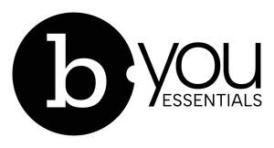

Trade Mark Journal No.2025/040 3 October 2025
UK00004264936 16 September 2025 (3,8,11,21,25,26)
Mark 1
Mark 2
Mark 3

- Class 3
- Hair spray; Hair shampoo; Hair mousse; Hair gel; Hair sprays; Hair powder; Hair styling spray; Hair shampoos; Hair bleach; Hair lotion; Hair wax; Hair pomades; Hair texturizers; Hair lacquer; Hair colouring; Styling sprays for the hair; Hair color; Hair conditioner; Hair oils; Hair oil; Tints for the hair; Hair and body wash; Hair color removers; Hair cosmetics; Styling paste for hair; Hair bleaches; Hair lacquers; Hair lighteners; Dyes for the hair; Hair dyes; Hair colourants; Hair mousses; Hair styling waxes; Hair styling lotions; Hair lotions; Hair cream; Colouring lotions for the hair; Hair colorants; Hair gels; Shampoos for human hair; Hair dye; Hair permanent wave kit; Preparations for permanent hair waves; Neutralizers for permanent waving; Permanent waving (Neutralizers for -); Permanent waving preparations; Permanent waving lotions; Permanent waving and curling preparations; Hair permanent treatments; Hydrogen peroxide for use on the hair.
- Class 8
- Hair clippers; Hair straightening irons; Electric hair straighteners; Electric hair crimper; Electric hair clippers; Hairdressing scissors; Hair cutting scissors; Hair styling appliances.
- Class 11
- Hairdryers; Travel hairdryers; Hand held electric hairdryers; Electric hair dryers; Dryers (Hair -); Hair dryers; Hair driers.
- Class 21
- Hair for brushes; Hair brushes; Hair tinting brushes; Hair color application brushes; Hair combs; Shampoo brushes; Electric rotating hair brushes; Electric hair combs; Electrically heated hair brushes.
- Class 25
- Hairdressing capes; Shampoo capes; Vests for use in barber shops and salons.
- Class 26
- Grips for the hair; Hair grips; Hair pins and grips; Foam hair rollers; Electric hair curlers; Electric hair rollers; Hair coloring caps; Hair coloring foils; Non-electric hair curlers; Hair rollers (Non-electric -).
Create Images Ion Ltd